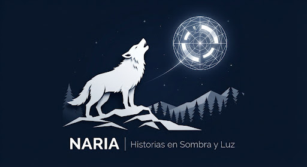
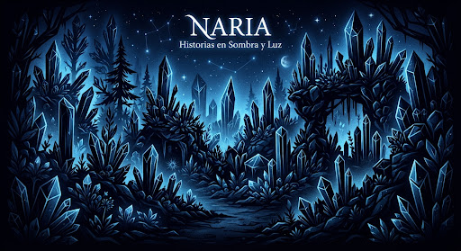
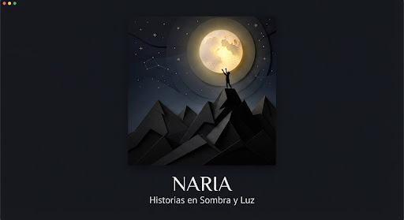
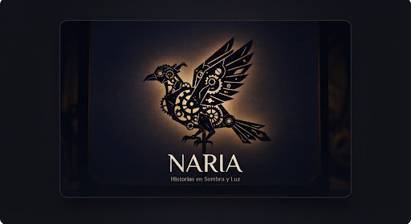

Historias que no olvidarás
Cuentos cortos ilustrados al estilo teatro de sombras para mentes curiosas.

lightbulb ¿Qué es NARIA?
Cuentos cortos, ilustrados, para leer en minutos, guardados en la memoria por más tiempo.
Sumergimos a los lectores en un mundo de teatro de sombras digital. Cada historia es una experiencia visual donde el alto contraste y la abstracción geométrica despiertan la imaginación, convirtiendo la lectura breve en un viaje perdurable.
Próximamente
Ver todos arrow_forward
Muy pronto

El Bosque de Cristal
Misterio • Magia
Muy pronto

La Luna de Papel
Aventura • Sueños
Muy pronto

El Eco Mecánico
Fantasía • Inventos